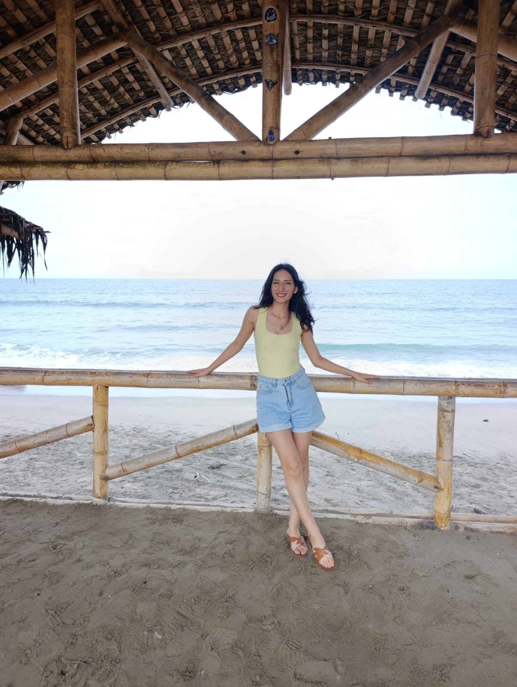

Nombre: Yomar Poleth Avila Aguilar
Edad: 26 años
Ciudad de residencia: Tena, Napo
Carrera: Tecnologías de la Información
| Pasatiempo | Descripción |
|---|---|
| Viajar | Me gusta conocer nuevos lugares, descubrir diferentes culturas y vivir nuevas experiencias. |
| Leer | Disfruto de la lectura porque me permite adquirir conocimientos y conocer nuevas ideas. |
| Danza | Me gusta la danza como una forma de expresión, entretenimiento y actividad artística. |
| Deporte | Descripción |
|---|---|
| Correr | Me gusta correr porque es una actividad que me permite mantenerme activa y disfrutar de los espacios naturales. |
Mi expectativa al estudiar Tecnologías de la Información es adquirir conocimientos sólidos para diseñar, implementar y proteger redes informáticas, programar aplicaciones y desarrollar software. Espero fortalecer mis habilidades profesionales, adquirir experiencia y aplicar mis conocimientos para resolver problemas tecnológicos de manera eficiente.
Me gusta mucho probar la gastronomía de los sitios que visito, admirar la belleza de los paisajes y perderme en un sin fin de naturaleza pura. Viajar me permite conocer nuevos lugares, disfrutar de diferentes experiencias y apreciar la diversidad natural y cultural.